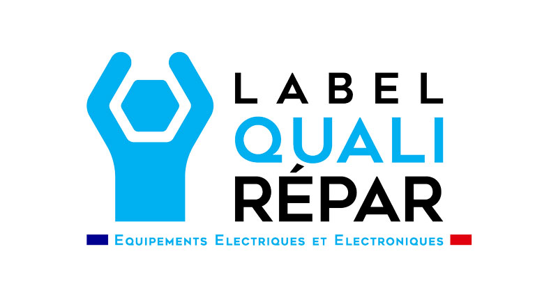

iPhone 15 Pro Max · 2023
Réparation iPhone 15 Pro Max à Mâcon
Grand écran fissuré ou dos en verre cassé sur votre iPhone 15 Pro Max ? Solution Phone le répare à Mâcon, avec les prix finaux affichés et 25 € déjà déduits.
- Note Google 4,7/5 · plus de 700 avis
- Généralement en moins d’une heure si la pièce est en stock
- Réparations garanties 6 mois
- 25 € déjà déduits
Prix de réparation iPhone 15 Pro Max
Prix au 25/09/2026Prix finaux, pièce et main-d’œuvre comprises, 25 € déjà déduits. La disponibilité de la pièce est confirmée avant l’intervention.
| Qualité | Prix |
|---|---|
| CompatibleLe choix économique pour un usage courant. | 65 € |
| Soft OLEDUn écran OLED souple : noirs profonds, rendu proche de l’origine. | 115 € |
| ReLifeUn écran Apple d’origine reconditionné. | 215 € |
| Qualité | Prix |
|---|---|
| CompatibleLa solution économique. | 65 € |
| Compatible reconnue par l’iPhoneUne batterie compatible conçue pour être reconnue par l’iPhone. | 75 € |
| Originale AppleUne batterie d’origine Apple, selon disponibilité. | 115 € |
Le iPhone 15 Pro Max en bref
Sorti en 2023, l’iPhone 15 Pro Max associe un cadre en titane, un écran de 6,7 pouces, le bouton Action et un téléobjectif offrant un zoom optique 5x. Comme les autres iPhone récents, son dos est en verre : une chute sur le dos peut le fissurer.
Écran iPhone 15 Pro Max cassé
Sa dalle OLED intègre la Dynamic Island et un rafraîchissement jusqu’à 120 Hz. Avant l’intervention, l’équipe vous explique ce que conserve chaque qualité (compatible, Soft OLED ou écran Apple d’origine reconditionné), notamment la fluidité.
Batterie iPhone 15 Pro Max
Même avec une grande batterie, l’autonomie diminue au fil des recharges. Trois qualités peuvent être proposées, aux prix finaux affichés ci-dessus.
Les autres réparations du iPhone 15 Pro Max
Vitre arrière, module photo avec téléobjectif, Face ID et port USB-C : diagnostic en boutique et devis avec le prix final avant toute intervention.
Les qualités de pièce, expliquées simplement
Écran
- Compatible : Le choix économique pour un usage courant.
- LTPS Prime : Un écran LCD haut de gamme, lumineux et réactif.
- Soft OLED : Un écran OLED souple : noirs profonds, rendu proche de l’origine.
- ReLife : Un écran Apple d’origine reconditionné.
Les qualités proposées dépendent des pièces disponibles pour votre modèle : l’équipe vous montre la différence avant que vous choisissiez.
Batterie
- Compatible : La solution économique.
- Compatible reconnue par l’iPhone : Une batterie compatible conçue pour être reconnue par l’iPhone.
- Originale Apple : Une batterie d’origine Apple, selon disponibilité.
Pour la batterie compatible reconnue par l’iPhone, l’équipe vous précise avant l’intervention ce qui s’affichera dans Réglages › Batterie.
Comment se passe la réparation ?
- Vous passez au 21 rue Gambetta à Mâcon, sans rendez-vous, ou vous envoyez votre demande sur WhatsApp ou par e-mail.
- L’équipe vérifie la panne et la pièce disponible, puis vous annonce le prix final. Rien ne commence sans votre accord.
- La réparation est généralement faite en moins d’une heure si la pièce est en stock. Affichage, tactile, charge et capteurs sont contrôlés avant de vous rendre l’iPhone.
- La réparation est garantie 6 mois. Paiement par carte, espèces (1 000 € maximum), Apple Pay ou virement.

QualiRépar : 25 € déjà déduits
Réparateur labellisé QualiRépar. 25 € déjà déduits de nos tarifs de réparation de smartphone : grâce au Bonus Réparation QualiRépar quand la réparation est éligible, offerts par Solution Phone sinon. En savoir plus sur QualiRépar.